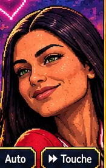

* SELON TOMA
* SELON TOMATOMA
POPESCU
20 MINUTES SANS IA
Son char. Sa villa. Tout est généré.
Pis là, l'IA vient de planter.

SES ATTAQUES TUENT EN UN COUP

GLISSE POUR BOUGER · TIR AUTOMATIQUE
TOMA POPESCU
CHOISIS TON TROPHÉE
Un seul choix pour ce boss, pour toute la partie.
Touche une carte pour reprendre.
3 trophées maximum · 1 par bossLe trophée s’ajoute aux récompenses habituelles.
NIVEAU SUPÉRIEUR
Choisis ton pouvoir. Toma va prendre le crédit.
Nouveau choix de 3 cartes.
0 / 2 relances utilisées
1re : 5 pièces · 2e : 10 pièces
PAUSE.
Deux secondes, câlisse.
J'reprends mon souffle.
SAUVEGARDE IMPOSSIBLE
Ta progression est encore dans cette session.
Réessaie ou reste en pause. Si tu quittes maintenant, les progrès depuis la dernière sauvegarde seront perdus.
PARAMÈTRES
UNE FIN TRÈS DRAMATIQUEGAME OVER
Épilogue optionnel. Charles est invincible et ses attaques tuent en un coup. Ta survie de 20 minutes est déjà gagnée.
CHARLES
L’ILLUMINÉ
INVINCIBLE ∞
Charles ne peut pas être vaincu.
Ses attaques tuent Toma en un coup, même avec des protections.
Le toucher fait avancer sa transformation, pas baisser sa vie.
Ta victoire des 20 minutes est déjà acquise et restera conservée.
Tu peux quitter l’épilogue depuis la pause.
LE PETIT MANUEL
SURVIVRE, C’EST SIMPLE.
Déplace-toi. Toma tire tout seul vers l’ennemie la plus proche. Ramasse les éclats bleus pour gagner de l’expérience et choisir tes pouvoirs.
LE VERT, ÇA SENT MAUVAIS.
Les orangs-outans roux frappent avec leurs longs bras. Sors du secteur orange avant leur claque. Éloigne-toi des gorilles péteuses dès qu'elles se préparent : le nuage vert fait mal. Les coffres contiennent de l’expérience, des soins et des pièces.
TA SEULE ALLIÉE.
Choisis « Blonde IA » : la même fille change de coiffure et de tenue sur cinq niveaux. Elle tire des cœurs, puis apprend à éviter les ennemis proches, ramasse plus loin, restaure un peu de bouclier et gagne deux drones. Ses cœurs principaux peuvent charmer; les mini-cœurs des drones ne charment pas.
FOUILLE LE QUARTIER.
Approche les ruines, cabanes, autels, épaves et failles pour découvrir un effet temporaire. Tu peux avoir un seul effet à la fois. Son compte à rebours s'arrête en pause. Un lieu épuisé se recharge pendant que tu explores. Les épaves ne se conduisent pas.
TÉLÉPHONE OU CLAVIER.
Pouce gauche pour bouger. Sur ordinateur : WASD, ZQSD ou flèches. Échap pour pause. M pour le son.
UNE COMÉDIE FICTIVE.
Personnalités et situations volontairement exagérées. Pixel art, musique chiptune et effets originaux. Conçu avec Charles, développé avec @dot.
Une partie dure 20 minutes. Ensuite, tu peux continuer à l’infini. Record et préférences sont conservés sur cet appareil.